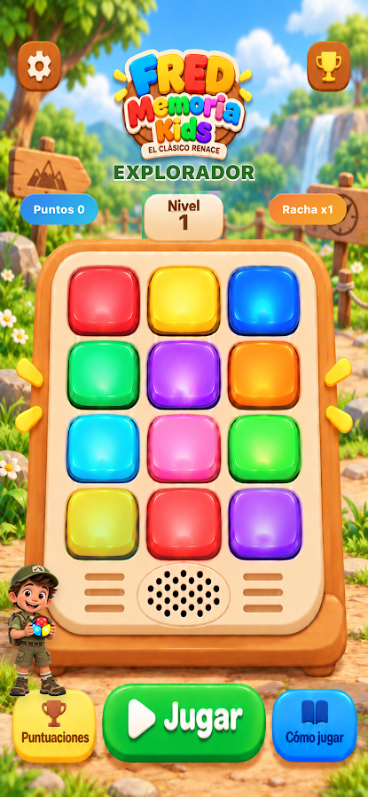
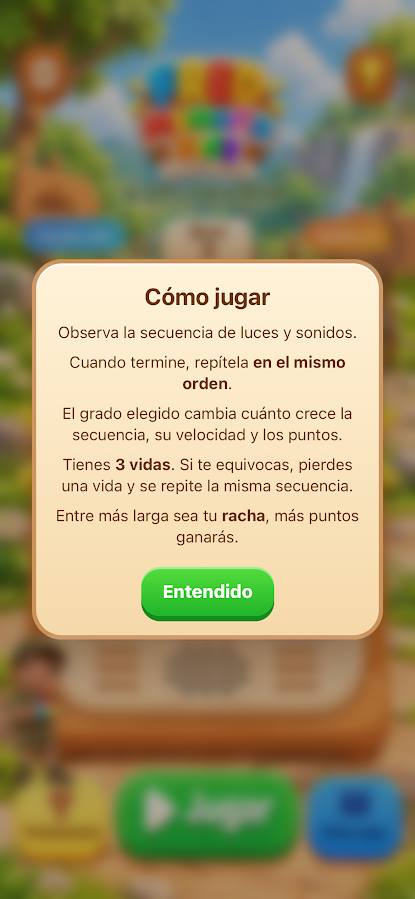
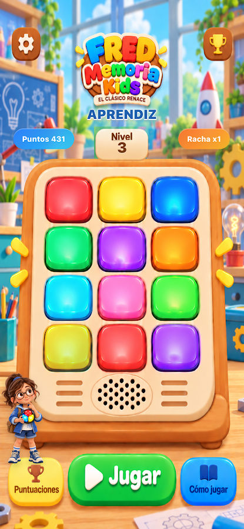
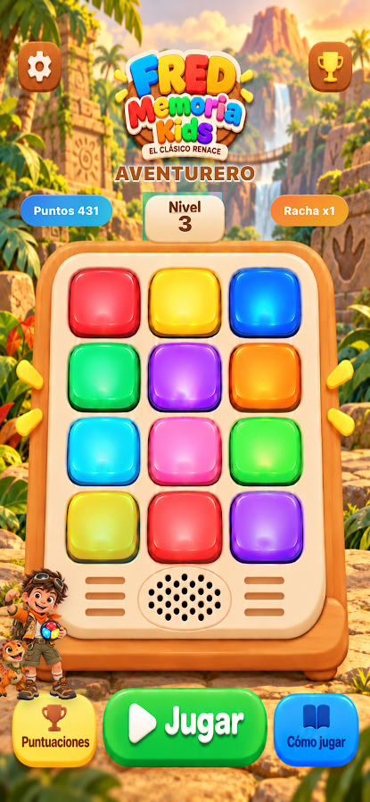
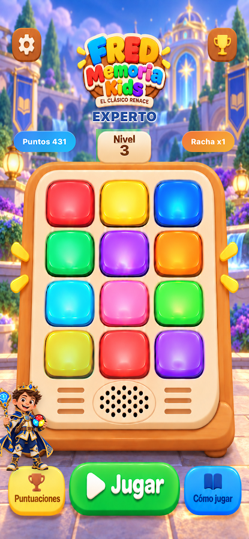

Memoria visual
Observa qué botones se iluminan y recuerda su secuencia de colores.
Fred Memoria Kids es un divertido juego de secuencias. Observa las luces, escucha los sonidos y repítelos en el orden correcto para llegar cada vez más lejos.
Un reto inspirado en los juegos de memoria de luces y sonidos que marcaron una época, ahora con escenarios, personajes y cuatro niveles de dificultad.

Cada secuencia combina diversión y concentración en un tablero lleno de color.
Observa qué botones se iluminan y recuerda su secuencia de colores.
Escucha los sonidos asociados a las luces e identifica su orden.
Recuerda la posición de cada botón para reproducir el recorrido.
Las reglas son sencillas. ¡El desafío es recordar una secuencia que crece!
Presta atención a la secuencia de luces y sonidos que reproduce el tablero.
Toca los mismos botones en la misma secuencia, sin equivocarte.
Avanza de nivel mientras la secuencia se hace más desafiante. Tienes tres vidas por partida.

Cuatro ambientes y personajes originales. El juego inicia en Explorador de forma predeterminada.
+1 paso · Tiempo normal
Puntos ×1
+1 paso · Más rápido
Puntos ×2
+1 a +2 pasos · Aleatorio y rápido
Puntos ×3
+1 a +3 pasos · Aleatorio y más rápido
Puntos ×4Todas las imágenes y los personajes de esta sección provienen de capturas reales de Fred Memoria Kids.
Capturas reales de la aplicación. Selecciona una para verla en grande.
Respuestas rápidas para que puedas disfrutar de Fred Memoria Kids.
¿Tienes preguntas, comentarios o encontraste algún error en Fred Memoria Kids? Escríbenos y cuéntanos qué sucedió.
Este es un correo de ejemplo: reemplázalo por tu dirección real antes de publicar.
Ayúdanos a seguir haciendo de la memoria una gran aventura.